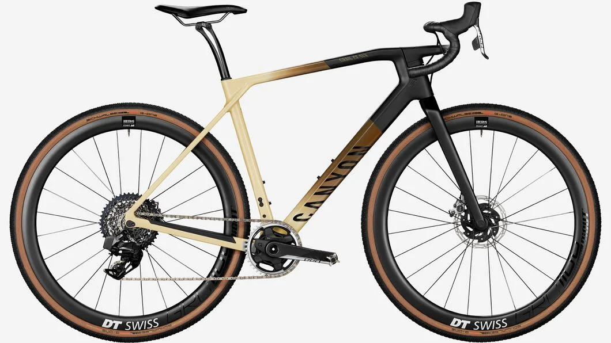
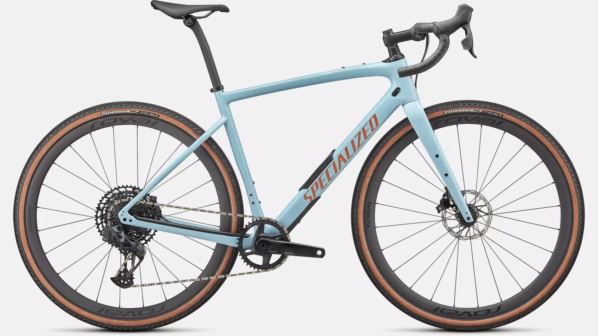
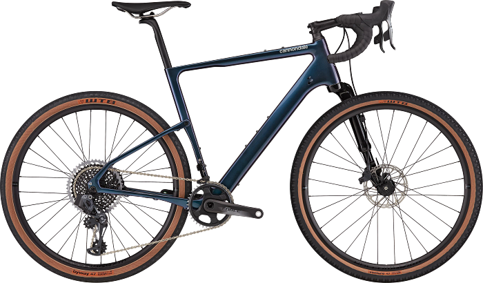

엔듀로 산악
Enduro Bike
#뛰어난_승차감이_일품
#다운힐보단_가벼워
#긴_거리의_산악_라이딩에_제격
Enduro World Series 2019 - Trophy of Nations Highlights
여행을 다니다 보면 누구나 샛길로 새기 마련입니다. 도로에서 뛰쳐나와서 풀을 가르고, 자갈길을 달리다 보면 뭔가 잘못
그래블 자전거를 추천하는 타입 :
로드가 타고 싶지만 거친 길도 달리고 싶은 라이더
장거리 여행이나 캠핑을 즐기고 자전거와 함께하고 싶은 라이더
기존에 쓰던 구동계 파츠들을 연계해서 쓰고싶은 라이더
RETRY
Photo Zone
이미지를 누르면 브랜드 페이지로 이동합니다.

CANYON Grail CF SLX 9

SPECIALIZED Diverge Expert

cannondale Topstone Lefty 1